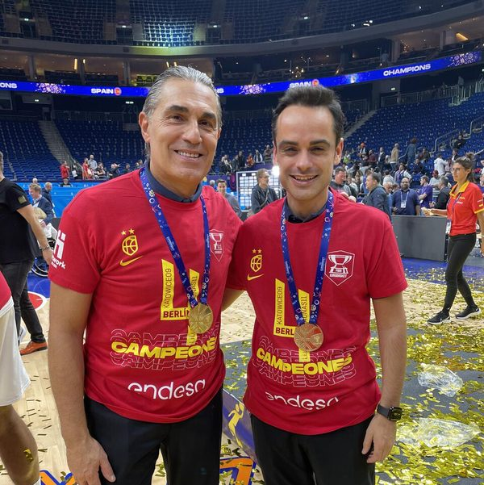
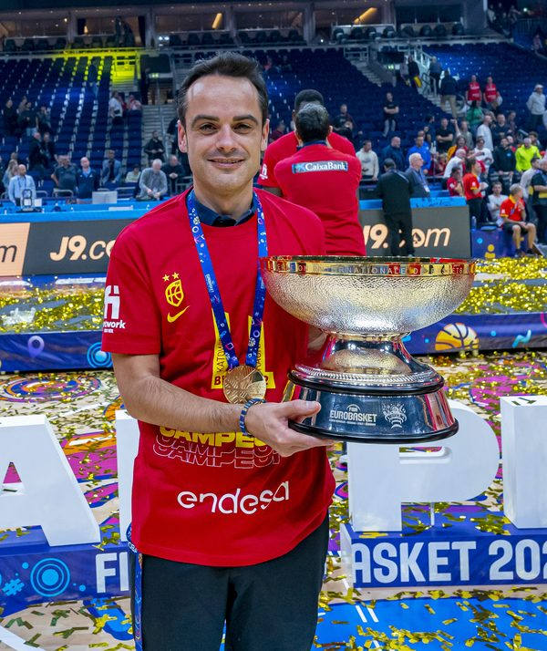
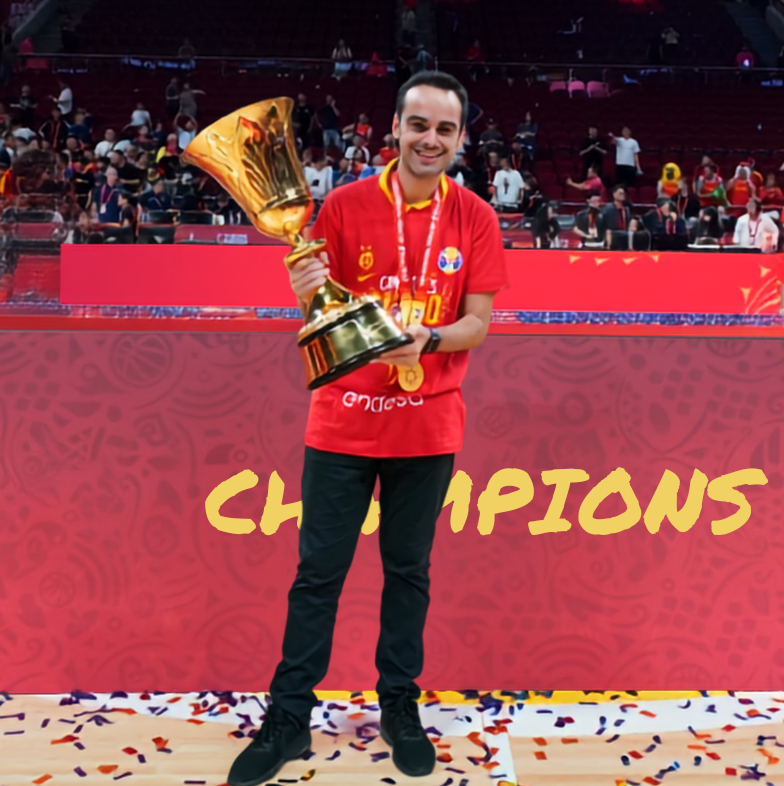
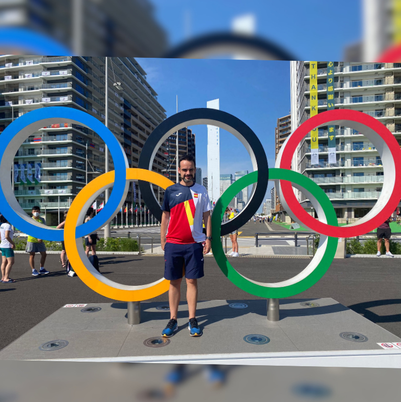

Transforma tu iPad en una Sala de Videoanálisis Profesional
Más rápido. Más claro. La herramienta definitiva para entrenadores exigentes.




Jorge Lorenzo
Con Sergio Scariolo · Eurobasket 2022 🥇
El entrenador detrás de DrawSports
Hola, soy Jorge Lorenzo.
He estado en muchas pistas. Algunas eran de baloncesto, otras de esas que no se ven. Desde los 16 años soy entrenador. He trabajado con todas las categorías —desde alevines hasta la élite mundial— y el baloncesto me ha llevado a lugares que nunca imaginé.
Construí DrawSports porque necesitaba una pizarra táctica en el iPad a la altura del trabajo en pista. Si tú también lo has sentido, esto es para ti.
La lógica del alto rendimiento, para CUALQUIER deporte.
Aunque vengo del baloncesto, el análisis visual es universal. DrawSports incluye pistas y campos oficiales de Fútbol Sala, Balonmano, Voleibol, Hockey y más. Si usas vídeo para mejorar, esta es tu app.
Adaptable a tu disciplina: Pistas y campos configurables.


⚡️
Videoanálisis Rápido
Importa desde iCloud, Drive o USB y empieza en segundos. Marca los cortes mientras ves el partido: cada acción se convierte en un clip automáticamente. Y con el historial inteligente, retoma tu trabajo donde lo dejaste sin perder tiempo buscando.
❄️
El Efecto "Freeze Frame"
No solo dibujes: explica. Usa la lupa para el detalle o crea un Freeze Frame: congela la imagen, dibuja la corrección táctica y decide exactamente cuántos segundos dura esa pausa. Convierte un vídeo en una lección.
📋
Pizarra Táctica Pro
Diseña jugadas y conceptos sin necesidad de vídeo. Alterna entre el Modo Libreta para notas rápidas o utiliza las Pistas Oficiales para tener el contexto real de la cancha en tus explicaciones.
🚀
Proyecta y Comparte
En la sala de vídeo: conecta a la TV y mantén el control total (velocidad, frame a frame). ¿Para enviar? Exporta clips sueltos o una secuencia completa, elige si incluyes audio o dibujos, y mándalo por WhatsApp o AirDrop al instante.
¿Listo para profesionalizar tu análisis?
Descargar GratisDescarga gratuita con 7 días de prueba. Luego, elige el plan que mejor se adapte a tu temporada.
Nacida de la máxima exigencia.


Más rápido, más inteligente con DrawSports.